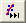
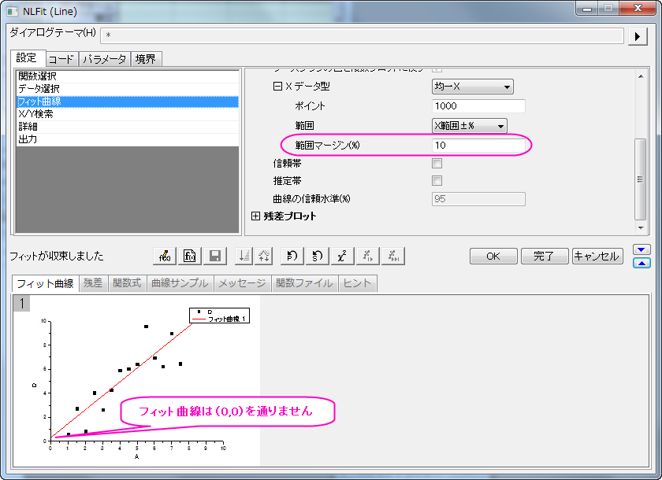
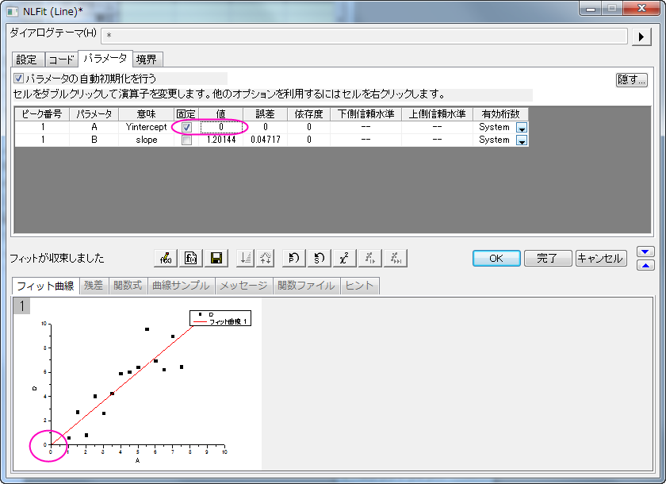
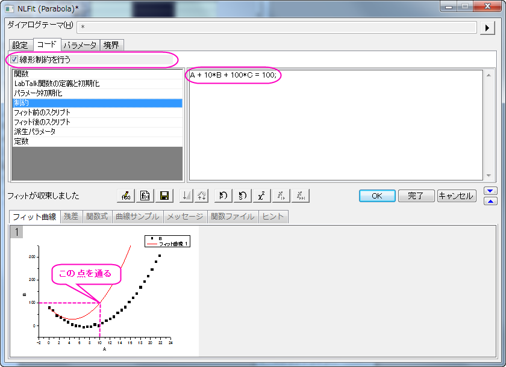
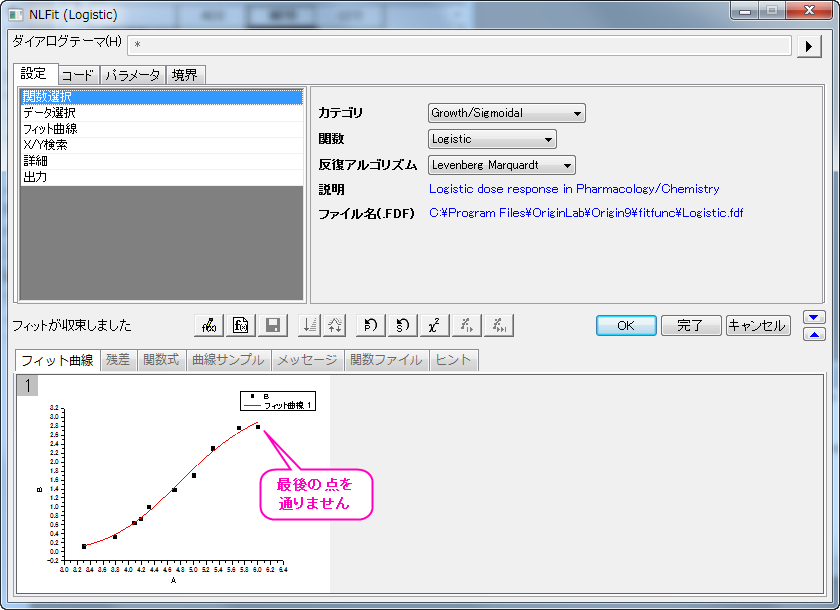
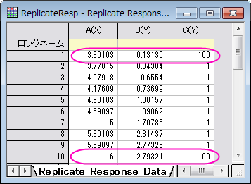
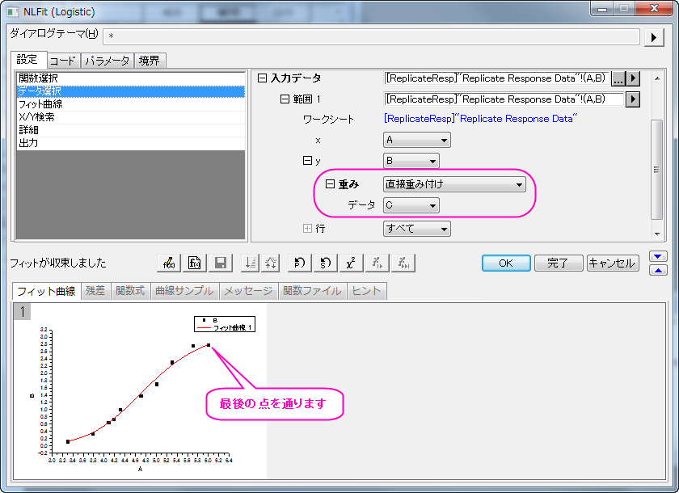

特定の点を通るフィット曲線
サマリー
このチュートリアルはある特定の点を通過させてフィットする方法を3つ紹介します。どの方法が最適かは、関数式とフィット曲線を通過させたいデータポイントによります。
学習する項目
- フィット曲線が特定の点を通るようにするいくつかの方法を学習する
- 非線形フィットでフィットパラメータを固定する
- 非線形フットで一般線形制約を利用する
- 重み付けをしてフィットする
サンプルとステップ
関数のパラメータを固定する
この方法はフィット曲線を通したポイントが関数のパラメータに関連している時のみ利用できます。典型的な例として、直線y = a + b * xをフィットする時に原点（0,0）を通過するようにフィット線を作成する場合を紹介します。この場合、a = 0とすればフィット線は（0,0）を通過する事が分かります。
- Originのワークシートに\Samples\Curve Fitting\Linear Fit.datをインポートします。
- Y属性の列、例えば列Dを選択し、解析：フィット：非線形曲線フィットとメニューから操作してNLFitダイアログを開きます。
- Polynomialのカテゴリを選択後、Line関数を選択します。
- 設定タブのフィット曲線をクリックします。Xデータ型のブランチ内で範囲オプションがX範囲±％になっていることを確認し、範囲マージン（％）の編集ボックスに10を入力します。このオプションを選択するとフィット曲線を延長できます。
- 収束までフィットボタンをクリックします。フィット曲線タブからも曲線が原点を通過していない事が分かります。

- パラメータタブに行き、パラメータAの固定チェックボックスにチェックを付け、値を0にします。収束までフィットボタンを再びクリックします。これで曲線が0を通過する事を確認できます。

|
Note:線形フィットダイアログ内の切片固定オプションを使用すると、強制的に原点を通過するように制御できます。
|
線形制約を使用する
この方法はフィット関数が直線、2次曲線、3次曲線などのような線形モデルである事が条件です。
線形制約を利用して、フィット曲線を特定の点を通過させる方法を紹介します。
- Originのワークシートに "\Samples\Curve Fitting\Polynomial Fit.dat"のデータをインポートします。
- 列Bを選択し、Ctrl + Yを押し、NLFitダイアログを開きます。
- PolynomialカテゴリでParabola（y = A + B * x + C * x2）を選択します。フィット曲線タブでは初期値がデータに良くフィットしていることが分かります。
- 例えば、曲線を(10,100)の座標を通過するようにします。(10,100)をフィット関数（y = A + B * x + C * x2）を代入すると、100 = A + 10 * B + 100 * Cとなります。この数式を一般線形制約の条件として使用します。 コードタブで制約を選択します。線形制約を行うにチェックをつけ、次の式を入力します。
A + 10*B + 100*C = 100
- 収束までフィットボタンをクリックします。フィット曲線はデータポイントとは違う事が分かりますが、特定の座標を通過していることが分かります。

重み付けを使用する
パラメータが何かの固有値、例えば上部または下部の漸近線である時に、生データに通過させたい点が含まれている場合、より大きな重みを付ける事で特定の点を通過させることができます。この方法は決して分析的な結果ではありませんが、誤差を減らすために使用する事ができます。
- データを準備するために、次のスクリプトを実行してください。
newbook;
string fname$ = system.path.program$;
fname$ += "Samples\Curve Fitting\Replicate Response Data.dat";
impasc fname$ options.PartImp.Partial:=1 options.PartImp.LastCol:=2;
wks.addcol();
col(a) = log(col(a)) + 5;
col(c)[1] = 100;
for(int ii = 2; ii < wks.maxrows; ii++)
{
col(c)[ii] = 1;
}
col(c)[wks.maxrows] = 100;
- まずは重み付けがない場合でどのようにフィットするか確認しましょう。列Bを選択し、解析：フィット：非線形曲線フィットから NLFit ダイアログを開きます。Growth/SigmoidalカテゴリからLogistic関数を選びます。そして収束までフィットボタンをクリックします。フィット曲線タブから、この曲線は上の方にある点をどこも通過しないことが分かります。

- 生データのワークシートでは列Cを作成し、最初と最後の値を大きくしています。この列を重み付けの指標とすれば、この2点はフィット曲線により大きな影響を与え、強制的にこれら2点を通過するようにできます。

設定タブにある、データ選択のページをアクティブにしましょう。以下のように入力データブランチを開き、重み付けオプションを表示します。直接重み付けをドロップダウンリストから選択し、データではCを重み付けするデータセットとして選択します。そして収束までフィットボタンをクリックします。

プレビューの結果から、フィット曲線が最初と最後のデータポイントを通過する事が分かります。